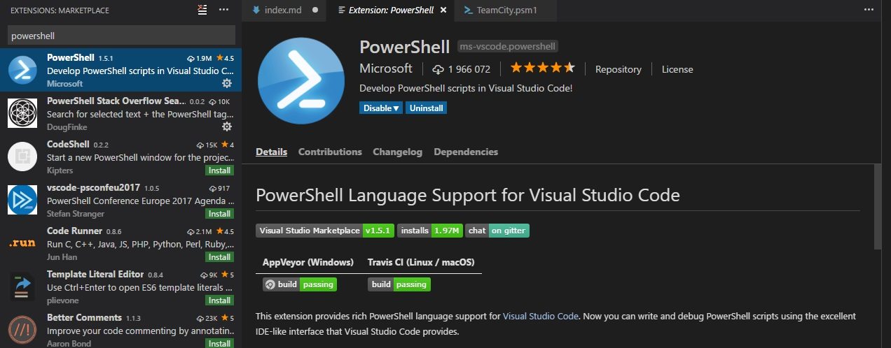

I’ve recently watched a pretty decent tutorial about DSC on Microsoft Virtual Academy. I’m not a huge fan of video tutorials because it always takes more time to watch them than read a book/blog post (you can hack it by increasing video speed and save yourself a couple of minutes) but sometimes there is additional beneficial side effect - the presenter can show you (accidentally or not) some tips and tricks not strictly related to the core subject of the video. This post is an attempt of summarizing tricks from the DSC tutorial and my former knowledge about GUI tools associated with PowerShell. I find it useful when preparing PowerShell scripts and it should be helpful for people who start exploring PowerShell.
Mentioned DSC tutorial can be found under the following links:
Getting Started with PowerShell Desired State Configuration (DSC)
Advanced PowerShell Desired State Configuration (DSC) and Custom Resources
PowerShell and Windows Explorer
The first tip is about switching between PowerShell console and Windows Explorer back and forth while keeping working directory context. This is the most trivial but at the same time very useful operation. In order to open Windows Explorer with current directory simply type:
> explorer .
… and to open PowerShell console with working directory set to currently opened folder within the Windows Explorer type powershell command in address bar.
Browsing scripts in console
When you are working in console environment and you want to check script content you can use Get-Content command to print script into screen in raw format or use Get-ColorizedContent to display script with line numbers and syntax highlighting. This cmdlet comes from PowerShellCookbook module which could be easily installed with Install-Module cmdlet from PowerShell gallery.
Opening PowerShell ISE from PowerShell console
There is no out-of-the-box editor which allows you to edit scripts right inside the PowerShell console. You can install third-party console editors or use PowerShell ISE which comes with Windows Management Framework. Simply type ise command with file path as the parameter to open it with ISE (you can skip file parameter to open a new instance of ISE with context set to current directory). In order to open another script in new ISE tab use psedit command (this command works only inside the ISE console).
PowerShell ISE is very useful to play around with PowerShell scripts because it allows you to execute your script partially (simply select parts of you code and press F8 to send it to PowerShell console).
Opening Visual Studio Code from PowerShell console
A good alternative to PowerShell ISE could be Visual Studio Code with plugin for powershell. I find VSCode better than ISE in terms of support for static analysis and debugging.

When VSCode is your PowerShell editor of choice too, you can also easily switch from console to this environment. Just execute code command with file path as a parameter to open given script with VSCode or replace the file path parameter with “.” (dot sign) to load current directory as a workspace inside VSCode.
> code .
Filtering result list with Out-GridView
When your command or script returns a long list it can be hard to spot interesting positions by scrolling through the console. You can make it a lot easier by redirecting the result to Out-GridView cmdlet (use ogv alias for shorten). The Out-GridView outputter presents data using grid control and allows to sort and filter results by defining complex criteria based on data attributes.
You can also use Out-GridView to select elements by providing OutputMode parameter
Exploring PowerShell CmdLets
Sometimes it’s hard to remember all method parameters (especially when we use them very rarely). You can check the list of available parameters by displaying method documentation inside the console with Get-Help command or utilizing dedicated form which could be created with Show-Command cmdlet.
> Show-Command Invoke-WebRequest
If you don’t remember the exact name of the method you can skip it and Show-Command cmdlet opens a window which allows you to search command by name. When you select a specific command all available parameter sets will be presented as tabs. You can select a given parameter set, provide values for parameters with dedicated form and click Run button to execute method. You can always get the method manual by clicking help button.
Inspecting complex objects
Another interesting cmdlet that we can find in PowerShellCookbook module is Show-Object. This command presents complex objects in the form of a tree. This expandable tree allows us to drill down and explore nested properties. It’s extremely useful when we have to deal with unknown objects.